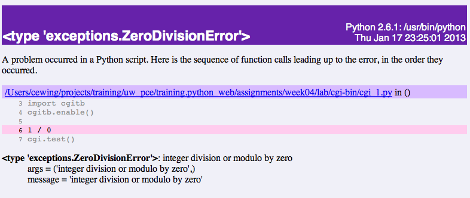
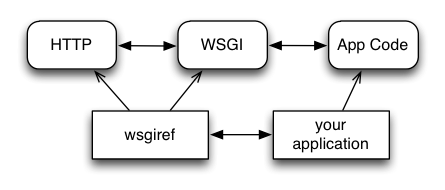
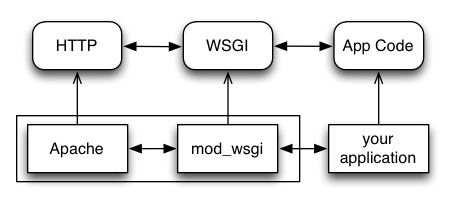
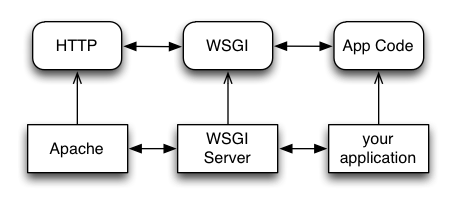

We’ve talked over the last few sessions about ways of consuming data from online web services.
In most cases, when you use a web service, you send some data to that service so that it can use that information as parameters for whatever process it performs.
How does the data we send to a web service end up getting used by that service?
A computer has an environment:
In *nix, you can see this in a shell:
$ printenv
TERM_PROGRAM=iTerm.app
...
It’s there in Windows too:
C:\> set
ALLUSERSPROFILE=C:\ProgramData
...
This can be manipulated. In a bash shell we can do this:
$ export VARIABLE='some value'
$ echo $VARIABLE
some value
And in Windows as well:
C:\Users\Administrator\> set VARIABLE='some value'
C:\Users\Administrator\> echo %VARIABLE%
'some value'
Once you change them, these new values are now part of the environment for as long as your shell session remains alive.
In *nix:
$ printenv
TERM_PROGRAM=iTerm.app
...
VARIABLE=some value
Or Windows:
C:\> set
ALLUSERSPROFILE=C:\ProgramData
...
VARIABLE='some value'
From within Python, the same environment can be seen:
$ python
...
>>> import os
>>> print os.environ['VARIABLE']
some_value
>>> print os.environ.keys()
['VERSIONER_PYTHON_PREFER_32_BIT', 'VARIABLE',
'LOGNAME', 'USER', 'PATH', ...]
And of course, from within Python you can alter os environment values:
>>> os.environ['VARIABLE'] = 'new_value'
>>> print os.environ['VARIABLE']
new_value
But changing that value inside Python doesn’t change the original value, outside Python:
>>> ^D
$ echo this is the value: $VARIABLE
this is the value: some_value
<OR>
C:\> \Users\Administrator\> echo %VARIABLE%
'some value'
So what does this all mean?
The Python interpreter, when you start it up, is a subprocess of the terminal session from which you started it.
subprocess.Popen(args, bufsize=0, executable=None,
stdin=None, stdout=None, stderr=None,
preexec_fn=None, close_fds=False,
shell=False, cwd=None, env=None, # <-------
universal_newlines=False, startupinfo=None,
creationflags=0)
When it comes to building online scripts that can consume incoming data, it is this concept of an environment that serves to connect data from an incoming request to the process(es) that handle it.
We’ll take a quick look at two implementations of this idea, the CGI standard and the WSGI specification.
CGI is little more than a set of standard environmental variables
First discussed in 1993, formalized in 1997, the current version (1.1) has been in place since 2004.
The preamble to rfc3875 has the following text:
This memo provides information for the Internet community. It does not specify an Internet standard of any kind.
This means that although there is a general agreement about what should be in the CGI environment, there is no law that enforces this. You cannot count on any specific information actually being there.
Here’s a list of the commonly understood environmental Meta-Variables in CGI:
4. The CGI Request . . . . . . . . . . . . . . . . . . . . . . . 10
4.1. Request Meta-Variables . . . . . . . . . . . . . . . . . 10
4.1.1. AUTH_TYPE. . . . . . . . . . . . . . . . . . . . 11
4.1.2. CONTENT_LENGTH . . . . . . . . . . . . . . . . . 12
4.1.3. CONTENT_TYPE . . . . . . . . . . . . . . . . . . 12
4.1.4. GATEWAY_INTERFACE. . . . . . . . . . . . . . . . 13
4.1.5. PATH_INFO. . . . . . . . . . . . . . . . . . . . 13
4.1.6. PATH_TRANSLATED. . . . . . . . . . . . . . . . . 14
4.1.7. QUERY_STRING . . . . . . . . . . . . . . . . . . 15
4.1.8. REMOTE_ADDR. . . . . . . . . . . . . . . . . . . 15
4.1.9. REMOTE_HOST. . . . . . . . . . . . . . . . . . . 16
4.1.10. REMOTE_IDENT . . . . . . . . . . . . . . . . . . 16
4.1.11. REMOTE_USER. . . . . . . . . . . . . . . . . . . 16
4.1.12. REQUEST_METHOD . . . . . . . . . . . . . . . . . 17
4.1.13. SCRIPT_NAME. . . . . . . . . . . . . . . . . . . 17
4.1.14. SERVER_NAME. . . . . . . . . . . . . . . . . . . 17
4.1.15. SERVER_PORT. . . . . . . . . . . . . . . . . . . 18
4.1.16. SERVER_PROTOCOL. . . . . . . . . . . . . . . . . 18
4.1.17. SERVER_SOFTWARE. . . . . . . . . . . . . . . . . 19
You can run CGI scripts that you write on any web server that supports CGI:
Note that nginx is not on this list. The designers of that server have specifically stated that they will not support CGI.
The Python standard library also provides a simple CGI server in the CGIHTTPServer module.
This module provides some benefits that will help if you need to debug CGI.
To see CGI in action, let’s create a very simple Python CGI script and run it, using the built-in server.
To begin with, create a folder called cgitests. Then create a folder inside that called cgi and inside that, create a script called cgi.py:
heffalump:tests cewing$ mkdir -p cgitests/cgi-bin
heffalump:tests cewing$ touch cgitests/cgi-bin/cgi_1.py
heffalump:tests cewing$ git status
heffalump:tests cewing$ cd cgitests/
heffalump:cgitests cewing$ tree .
.
└── cgi-bin
└── cgi_1.py
Next, open cgi.py in your text editor and enter the following code:
#!/usr/bin/env python
import cgi
cgi.test()
Once you’ve saved that file, start the Python CGI server.
!!Make sure you are in the cgitests directory, not the cgi directory!!
heffalump:cgitests cewing$ python -m CGIHTTPServer
Serving HTTP on 0.0.0.0 port 8000 ...
Now, open your browser and point it at the following address:
http://localhost:8000/cgi-bin/cgi_1.py
What do you see? What’s in the terminal where the server is running?
127.0.0.1 - - [25/Feb/2014 10:31:14] "GET /cgi-bin/cgi_1.py HTTP/1.1" 200 -
Traceback (most recent call last):
File "/System/Library/Frameworks/Python.framework/Versions/2.7/lib/python2.7/CGIHTTPServer.py", line 253, in run_cgi
os.execve(scriptfile, args, env)
OSError: [Errno 13] Permission denied
127.0.0.1 - - [25/Feb/2014 10:31:14] CGI script exit status 0x7f00
Notice that the response the server sent back to the client has the HTTP status 200. As far as your web browser is concerned, nothing went wrong. But clearly something is wrong.
CGI is famously difficult to debug. There are reasons for this:
There are a couple of important facts that are related to the way CGI processes are run:
We’ve got the shebang, but if you look, our script is not executable. Let’s fix that.
heffalump:cgitests cewing$ ls -l cgi-bin/
total 0
-rw-r--r-- 1 cewing staff 0 Feb 25 10:18 cgi_1.py
heffalump:cgitests cewing$ chmod 755 cgi-bin/cgi_1.py
heffalump:cgitests cewing$ ls -l cgi-bin/
total 0
-rwxr-xr-x 1 cewing staff 0 Feb 25 10:18 cgi_1.py
heffalump:cgitests cewing$
Once you have fixed that, terminate your CGI server and restart it:
heffalump:cgitests cewing$ python -m CGIHTTPServer
Serving HTTP on 0.0.0.0 port 8000 ...
What do you see now?
In CGI, problems with permissions can lead to failure. So can scripting errors.
Back in your editor, add the following line of code before the call to cgi.test()
1 / 0
Reload your browser. What happens now? What does your browser tell you? How about the server terminal?
Back in your editor, add the following lines, just below import cgi:
import cgitb
cgitb.enable()
Now, reload again. You should see something like this.
Let’s fix the error from our traceback. Edit your cgi_1.py file to match:
#!/usr/bin/python
import cgi
import cgitb
cgitb.enable()
cgi.test()
We’ve said that CGI is largely a set of agreed-upon environmental variables.
We’ve seen how environmental variables are found in python in os.environ
We’ve also seen that at least some of the variables in CGI are not in the standard set of environment variables.
Where do they come from?
Let’s find ‘em. In a terminal (on your local machine, please) fire up python:
>>> import CGIHTTPServer
>>> CGIHTTPServer.__file__
'/big/giant/path/to/lib/python2.6/CGIHTTPServer.pyc'
Copy this path and open the file it points to (without the ‘c’) in your text editor
From CGIHTTPServer.py, in the CGIHTTPServer.run_cgi method:
# Reference: http://hoohoo.ncsa.uiuc.edu/cgi/env.html
# XXX Much of the following could be prepared ahead of time!
env = {}
env['SERVER_SOFTWARE'] = self.version_string()
env['SERVER_NAME'] = self.server.server_name
env['GATEWAY_INTERFACE'] = 'CGI/1.1'
env['SERVER_PROTOCOL'] = self.protocol_version
env['SERVER_PORT'] = str(self.server.server_port)
env['REQUEST_METHOD'] = self.command
...
ua = self.headers.getheader('user-agent')
if ua:
env['HTTP_USER_AGENT'] = ua
...
os.environ.update(env)
...
And that’s it, the big secret. The server takes care of setting up the environment so it has what is needed.
Now, in reverse. How does the information that a script creates end up in your browser?
A CGI Script must print its results to stdout.
Use the same method as above to import and open the source file for the cgi module. Note what test does for an example of this.
What the Server Does:
What the Script Does:
All this is well and good, but where’s the dynamic stuff?
It’d be nice if a user could pass form data to our script for it to use.
In HTTP, these types of inputs show up in the URL query (the part after the ?):
http://myhost.com/script.py?a=23&b=37
In the cgi module, we get access to this with the FieldStorage class:
import cgi
form = cgi.FieldStorage()
stringval = form.getvalue('a', None)
listval = form.getlist('b')
CGI is quite useful, but there are problems:
How do we overcome this problem?
The most popular approach is to have a long-running process inside the server that handles CGI scripts.
FastCGI and SCGI are existing implementations of CGI in this fashion. The Apache module mod_python offers a similar capability for Python code.
This makes it much more difficult to share resources
Enter WSGI, the Web Server Gateway Interface.
Where other alternatives are specific implementations of CGI, WSGI is itself a new specification, not an implementation.
WSGI is generalized to describe a set of interactions, so that developers can write WSGI-capable apps and deploy them on any WSGI server.
Read the WSGI spec: http://www.python.org/dev/peps/pep-0333
WSGI consists of two parts, a server and an application.
A WSGI Server must:
A WSGI Appliction must:
Here is some pseudocode that outlines what basic functions a WSGI server must implement:
from some_application import simple_app
def handle_request(request, app):
environ = build_env(request)
iterable = app(environ, start_response)
for data in iterable:
send_response(data)
def build_env(request):
# put together some environment info from the reqeuest
return env
def start_response(status, headers):
# start an HTTP response, sending status and headers
# listen for HTTP requests and pass on to handle_request()
serve(simple_app)
Where the simplified server above is not functional, this is a complete app:
def application(environ, start_response)
status = "200 OK"
body = "Hello World\n"
response_headers = [('Content-type', 'text/plain'),
('Content-length', len(body))]
start_response(status, response_headers)
return [body]
So, WSGI consists of servers and applications. But there’s actually a third part of the puzzle. Something called WSGI middleware
WSGI Servers:
HTTP <—> WSGI
WSGI Applications:
WSGI <—> app code
So the WSGI Stack can be expressed like this:
HTTP <—> WSGI <—> app code
There are a number of different ways of serving WSGI apps.
Using wsgiref
The Python standard lib provides a reference implementation of WSGI:
Apache mod_wsgi
You can also deploy with Apache as your HTTP server, using mod_wsgi:
Proxied WSGI Servers
Finally, it is also common to see WSGI apps deployed via a proxied WSGI server:
WSGI shares the concept of environment with CGI.
In WSGI the environment is explicitly built and passed to the application.
WSGI does not make use directly of os.environ.
But what is in the WSGI environment should look familiar:
REQUEST_METHOD
The HTTP request method, such as "GET" or "POST". This cannot ever be an
empty string, and so is always required.
SCRIPT_NAME
The initial portion of the request URL's "path" that corresponds to the
application object, so that the application knows its virtual "location".
This may be an empty string, if the application corresponds to the "root" of
the server.
PATH_INFO
The remainder of the request URL's "path", designating the virtual
"location" of the request's target within the application. This may be an
empty string, if the request URL targets the application root and does not
have a trailing slash.
QUERY_STRING
The portion of the request URL that follows the "?", if any. May be empty or
absent.
CONTENT_TYPE
The contents of any Content-Type fields in the HTTP request. May be empty or
absent.
CONTENT_LENGTH
The contents of any Content-Length fields in the HTTP request. May be empty
or absent.
SERVER_NAME, SERVER_PORT
When combined with SCRIPT_NAME and PATH_INFO, these variables can be used to
complete the URL. Note, however, that HTTP_HOST, if present, should be used
in preference to SERVER_NAME for reconstructing the request URL. See the URL
Reconstruction section below for more detail. SERVER_NAME and SERVER_PORT
can never be empty strings, and so are always required.
SERVER_PROTOCOL
The version of the protocol the client used to send the request. Typically
this will be something like "HTTP/1.0" or "HTTP/1.1" and may be used by the
application to determine how to treat any HTTP request headers. (This
variable should probably be called REQUEST_PROTOCOL, since it denotes the
protocol used in the request, and is not necessarily the protocol that will
be used in the server's response. However, for compatibility with CGI we
have to keep the existing name.)
HTTP_ Variables
Variables corresponding to the client-supplied HTTP request headers (i.e.,
variables whose names begin with "HTTP_"). The presence or absence of these
variables should correspond with the presence or absence of the appropriate
HTTP header in the request.
Let’s create ourselves a simple WSGI app so that we can see this in action.
In your terminal, kill the CGIHTTPServer and then move up and out of the cgitests directory.
Make a new directory called wsgitests and create a new file in it called simple_app.py. Then open that in your editor:
heffalump:cgitests cewing$ cd ..
heffalump:tests cewing$ mkdir wsgitests
heffalump:tests cewing$ touch wsgitests/simple_app.py
heffalump:tests cewing$ subl wsgitests/
In your new file, enter the following code:
def application(environ, start_response):
line_tmpl = "Key: {} Value: {}\n"
body_length = 0
response = []
for key, val in environ.items():
line = line_tmpl.format(key, val)
response.append(line)
body_length += len(line)
status = '200 OK'
response_headers = [('Content-Type', 'text/plain'),
('Content-Length', str(body_length))]
start_response(status, response_headers)
return response
Then, at the bottom of the file, add the following __main__ block:
if __name__ == '__main__':
from wsgiref.simple_server import make_server
srv = make_server('localhost', 8080, application)
srv.serve_forever()
Note
We do not define start_response, the application does that.
We are responsible for determining the HTTP status.
You can now start up a wsgi server by running this script at the command line:
heffalump:wsgitests cewing$ python simple_app.py
What host and port will it use?
Point your browser at http://localhost:8080/. Did your application work?
Look over the names and values present in the WSGI environment. What parts do you think might be useful in building a more complex application?
Also notice that although we have a Python file named simple_app.py, the name of our script does not appear in the URL. This is different from CGI.
What does this mean about our application? What does it mean if our application is to serve multiple “resources” from different URIs?
Because WSGI is a long-running process, the file you are editing is not reloaded after you edit it.
You’ll need to quit and re-run the script between edits.
However, unlike CGI, WSGI does not hijack stdout which means that you can insert breakpoints into WSGI application code and interact with the code in a debugger.
Yay!
{kind=link}
{kind=link}
{kind=link}
{kind=link}
{kind=link}